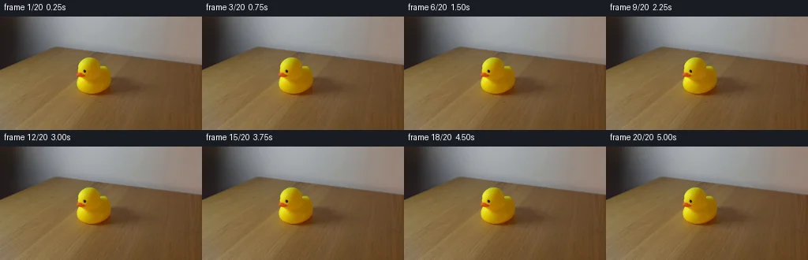
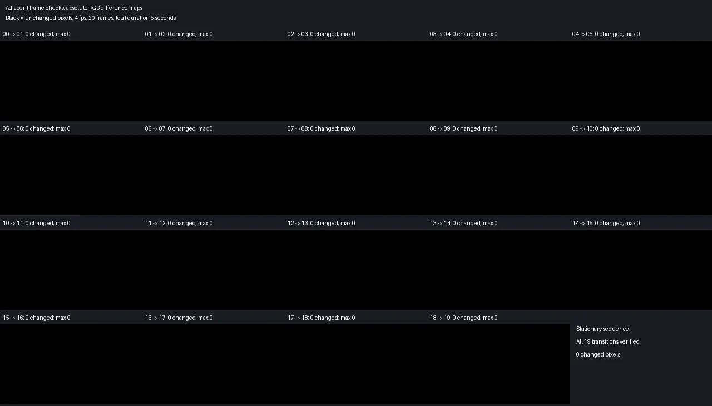

V0 · 初版 · 最终提交
![]()
Observable Generation Trace
把最终像素视频、Harness 冻结的每轮候选、真实工具事件和 Agent 自述放在同一页。可观测证据与模型自述分开标记，避免把“模型说它检查过”误当成真实工具调用。
![首帧]()
Static locked-off single-shot with fixed frame throughout filmed with constant framerate in real-time. The scene shows a realistic scientific demonstration. The scene only contains the described setup and actions. Behind the wooden table is a plain white background. The yellow rubber duck sits stationary on a light brown wooden table.
首帧显示在左侧播放器初始画面。Track 权限、隔离和 tensor 一致性来自 run manifest，而不是 METHOD.md。
默认勾选初版和最终版；可选其他版本一起同步播放。仅检查图更新的连续重复快照已合并，回退旧视频仍保留为一次修订。
Observable events
来源：events.jsonl + run manifest
此 Track 禁止读取输出图片。逐轮预览由外部 Harness 自动冻结，只用于事后审计，生成 Agent 当时看不到这些页面。
Frozen candidates
每张图来自该 round 的真实 00 / 01 / 05 / 10 / 19 帧

pixels 500834436cef15f1 · code a1d1b1d9b3dcddb8
--- previous/generate.py
+++ current/generate.py
@@ -0,0 +1,146 @@
+"""Generate the specified stationary scene by exact local RGB replication.
+
+Run from this workspace with: python generate.py
+No model, renderer, network, or image-viewing tool is used.
+"""
+
+from pathlib import Path
+import base64
+import hashlib
+import json
+import shutil
+
+import numpy as np
+from PIL import Image, ImageDraw
+
+from artifact_io import save
+
+
+ROOT = Path(__file__).resolve().parent
+COUNT = 20
+FPS = 4
+
+
+def pack(rgb):
+ p = rgb.astype(np.uint32)
+ return (p[..., 0] << 16) | (p[..., 1] << 8) | p[..., 2]
+
+
+def read_rgb(path):
+ with Image.open(path) as image:
+ assert image.mode == 'RGB', (path.name, image.mode)
+ assert image.size == (256, 144), (path.name, image.size)
+ return np.array(image, dtype=np.uint8)
+
+
+def transition_sheet(frames):
+ """Diagnostic: all 19 absolute adjacent RGB difference maps, unamplified."""
+ tile_width, tile_height, header = 256, 170, 50
+ sheet = Image.new('RGB', (5 * tile_width, header + 4 * tile_height), (25, 28, 35))
+ draw = ImageDraw.Draw(sheet)
+ draw.text((10, 8), 'Adjacent frame checks: absolute RGB difference maps', fill='white')
+ draw.text((10, 26), 'Black = unchanged pixels; 4 fps; 20 frames; total duration 5 seconds', fill='white')
+ changes = []
+ for i in range(COUNT - 1):
+ delta = np.abs(frames[i + 1].astype(np.int16) - frames[i].astype(np.int16))
+ changed = int(np.count_nonzero(np.any(delta != 0, axis=-1)))
+ changes.append({
+ 'from_frame': i,
+ 'to_frame': i + 1,
+ 'changed_pixels': changed,
+ 'max_channel_difference': int(delta.max()),
+ 'mean_absolute_channel_difference': float(delta.mean()),
+ })
+ x = (i % 5) * tile_width
+ y = header + (i // 5) * tile_height
+ draw.text((x + 5, y + 5), f'{i:02d} -> {i + 1:02d}: {changed} changed; max {delta.max()}', fill='white')
+ sheet.paste(Image.fromarray(delta.astype(np.uint8)), (x, y + 23))
+ x, y = 4 * tile_width, header + 3 * tile_height
+ draw.text((x + 12, y + 25), 'Stationary sequence', fill='white')
+ draw.text((x + 12, y + 48), 'All 19 transitions verified', fill='white')
+ draw.text((x + 12, y + 71), '0 changed pixels', fill='white')
+ sheet.save(ROOT / 'transition_check.png')
+ return changes
+
+
+def verify_player(tensor):
+ html = (ROOT / 'index.html').read_text()
+ encoded_json = html.split('const DATA=', 1)[1].split(';\nfunction unpack', 1)[0]
+ data = json.loads(encoded_json)
+ decoded = np.frombuffer(base64.b64decode(data['first']), dtype='<u4').copy()
+ assert decoded.shape == (256 * 144,)
+ assert len(data['deltas']) == COUNT - 1
+ assert np.array_equal(decoded.reshape(144, 256), tensor[..., 0])
+ for t, encoded in enumerate(data['deltas'], start=1):
+ patch = np.frombuffer(base64.b64decode(encoded), dtype='<u4')
+ i = 0
+ while i < len(patch):
+ start, count = int(patch[i]), int(patch[i + 1])
+ i += 2
+ decoded[start:start + count] = patch[i:i + count]
+ i += count
+ assert np.array_equal(decoded.reshape(144, 256), tensor[..., t]), t
+ assert 'setInterval(' in html and '},250)' in html
+ return True
+
+
+def main():
… diff truncated; 59 more lines …Final visual checks
Harness 保存的最终产物


Agent claims
以下文字由生成 Agent 撰写，不等同于工具证据
Written before implementing the generator. The supplied initial image was observed in the user attachment; local Python was used only for metadata and numeric measurements. Later generated images will be checked numerically.
first_frame.png, RGB PNG, width 256 and height 144 pixels.The prompt specifies a stationary duck, a fixed camera, and no further action. The supported continuation is a static scene in mechanical equilibrium. The duck's translation, rotation, and deformation stay zero; its contact and shadow stay constant. No additional apparatus, movement, or lighting change is needed. Preserve the supplied RGB pixels exactly for the complete sequence.
Sampling is 4 fps. Each frame is displayed for 0.25 seconds, giving 5 seconds total. Frame 00 starts at t=0; frame 19 starts at t=4.75 seconds.
| Frame | Start (seconds) | Planned state |
|---|---|---|
| 00 | 0.00 | Exact input frame; duck stationary on table. |
| 01 | 0.25 | Same pose, framing, texture, lighting, and shadow. |
| 02 | 0.50 | Same pose, framing, texture, lighting, and shadow. |
| 03 | 0.75 | Same pose, framing, texture, lighting, and shadow. |
| 04 | 1.00 | Same pose, framing, texture, lighting, and shadow. |
| 05 | 1.25 | Same pose, framing, texture, lighting, and shadow. |
| 06 | 1.50 | Same pose, framing, texture, lighting, and shadow. |
| 07 | 1.75 | Same pose, framing, texture, lighting, and shadow. |
| 08 | 2.00 | Same pose, framing, texture, lighting, and shadow. |
| 09 | 2.25 | Same pose, framing, texture, lighting, and shadow. |
| 10 | 2.50 | Same pose, framing, texture, lighting, and shadow. |
| 11 | 2.75 | Same pose, framing, texture, lighting, and shadow. |
| 12 | 3.00 | Same pose, framing, texture, lighting, and shadow. |
| 13 | 3.25 | Same pose, framing, texture, lighting, and shadow. |
| 14 | 3.50 | Same pose, framing, texture, lighting, and shadow. |
| 15 | 3.75 | Same pose, framing, texture, lighting, and shadow. |
| 16 | 4.00 | Same pose, framing, texture, lighting, and shadow. |
| 17 | 4.25 | Same pose, framing, texture, lighting, and shadow. |
| 18 | 4.50 | Same pose, framing, texture, lighting, and shadow. |
| 19 | 4.75 | Same stationary state, held through t=5.00. |
The input depicts a yellow rubber duck resting on a wooden table. The prompt explicitly keeps the duck stationary and the camera fixed, with no further action. The generated continuation therefore holds the initial image for the entire five seconds.
generate.py reads the supplied 256 by 144 RGB image with Pillow and repeats its
unchanged uint8 pixel array 20 times with NumPy. No motion, deformation, camera
change, new object, texture synthesis, or illumination variation is added.
This is deterministic pixel copying. It uses no AI model, external engine,
network access, or physical simulator. The interpretation is mechanical
equilibrium with constant appearance, preserving the input's photographic
lighting, contact shadow, geometry, and background.
The supplied output-only artifact_io.save helper writes the frames, packed
pixel archive, contact sheet, and self-contained HTML player. pixels.npz
contains the pixels array with shape (144,256,20), dtype uint32, and channel
packing 0xRRGGBB. The player decodes the same pixels and advances at 250 ms
per frame, giving 4 fps and 5 seconds. Frame 00 also receives a byte-for-byte
copy of the original PNG.
inspection.png is the supplied helper's eight-frame contact sheet.
transition_check.png displays all 19 unamplified absolute adjacent RGB
difference maps, labeled with changed-pixel counts and maximum channel
differences. For this stationary sequence all difference maps are black.
Run python generate.py in this workspace to regenerate and check the outputs.
The generator independently reopens every exported frame and the NPZ archive,
checks RGB dimensions and dtypes, checks frame 00 against the original PNG
bytes, and verifies every PNG pixel against its packed tensor value. It also
decodes all 20 frames embedded in the HTML and compares them to the tensor.
Adjacent-frame differences must all equal zero. Diagnostic PNGs are checked
for mode, dimensions, and valid encoding. Results are saved in
verification.json.
The supplied first image was observed through the user attachment. Generated outputs are inspected only through local Python decoding and numeric checks; no image Read/View tool or visual review is used for any later output.